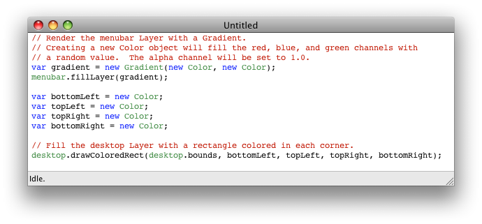

Keywords for Javascript will be highlighted in blue and Top Draw script variables and classes will be highlighted in green. The text in the lower left corner will indicate if the TDS is idle, rendering, or finished rendering. If there were any errors in the file, the line with the problem will be highlighted in red.
The Preview window will also open. If you choose the "Render" item from the Drawing menu, you'll see the preview window update to show a scaled representation of your desktop, something like this:
If you like this image and want to install it on your desktop, you can choose the "Install onto Desktop" item from the Drawing menu. The image file (or files if you have multiple displays) will be set as your desktop. You can use System Preferences to set your desktop back to the original image if you change your mind.
| File Menu | Description |
|---|---|
| New | Create a new TDS file with a few lines of code to generate an image. |
| Open... | Open a TDS file for editing, rendering, and saving. |
| Open Recent | A list of recently opened TDS files. |
| Close | Close the frontmost TDS file. |
| Save | Save the frontmost TDS file. |
| Save As... | Save the frontmost TDS file with a different name. |
| Revert to Saved | After a TDS file has been modified, this option will be enabled and if selected, it will replace the contents of the file with the last saved contents. |
| Export Sample... | Opens a Save panel prompting for the location to place a rendered JPEG file that is a small (1024 x 768 pixel) representation of the After a TDS file has been modified, this option will be enabled and if selected, it will replace the contents of the file with the last saved contents. |
| Drawing Menu | Description |
|---|---|
| Render | Render the frontmost TDS into an image. |
| Cancel Render | If you have a problem with a TDS rendering taking too long, you can choose this to cancel the rendering. |
| Install onto Desktop | The image rendered from the frontmost TDS will be set as your desktop image (or images if you have multiple displays). |

| Window Menu | Description |
|---|---|
| Preview | Toggle the Preview window's visible state. If a TDS has been rendered, its image will be in the Preview window. |
| Logging | Toggle the Logging window's visible state. Information about the rendering of the TDS file is in the Logging window, along with any errors that may have occurred. |
| Install onto Desktop | The image rendered from the frontmost TDS will be set as your desktop image (or images if you have multiple displays). |
| Arguments | Description |
|---|---|
| (none) | The red, green, and blue values will be randomly assigned. |
| color-name: string [, alpha-value] | Lookup the name (e.g., "white" or "purple") from the list of HTML colors. Optionally set the alpha to alpha-value. |
| gray-scale [, alpha-value] | Set the red, green, and blue values to gray-scale. Optionally set the alpha to alpha-value. |
| red-value, green-value, blue-value [, alpha-value] | Set the red, green, and blue values. Optionally set the alpha to alpha-value. |
| Name | Arguments | Description | Returns |
|---|---|---|---|
| blend | src-color: Color [, blend-amount] | Create a new Color object that is blend-amount of src-color and (1.0 - blend-amount) of this color. If not specified, blend-amount defaults to 0.5. | Color |
| contrasting | [contrast-amount] | Create a new color based on the current color that is contrasting by contrast-amount. The contrast is created by changing both the hue and the brightness. If not specified, contrast-amount defaults to 0.2. | Color |
| darker | [darker-amount] | Create a new color based on the current color with its brightness adjusted downwards by darker-amount. If not specified, darker-amount defaults to 0.2. | Color |
| lighter | [lighter-amount] | Create a new color based on the current color with its brightness adjusted upwards by lighter-amount. If not specified, lighter-amount defaults to 0.2. | Color |
| toString | (none) | Create a new String object that contains a formatted represenatation of the red, green, blue, and alpha channels. | String |
| vary | red-value, green-value, blue-value [, alpha-value] | Create a new Color object based on the current color but vsaried by some random amount. Specify the amount of variation for each channel. If not specified, alpha-value is 0.0 (no variation). | Color |
| Name | Description | Type | Read/Write |
|---|---|---|---|
| alpha / a | The alpha channel used for translucency / opacity. | float | Read/Write |
| blue / b | The blue channel. | float | Read/Write |
| brightness | The HSV brightness value. Setting this value may result in the red, green, and/or blue values changing. | float | Read/Write |
| green / g | The green channel. | float | Read/Write |
| hue | The HSV hue value. Setting this value may result in the red, green, and/or blue values changing. | float | Read/Write |
| red / r | The red channel. | float | Read/Write |
| saturation | The HSV saturation value. Setting this value may result in the red, green, and/or blue values changing. | float | Read/Write |
| Name | Description | Class | Read/Write |
|---|---|---|---|
| compositor | The Compositor object for all of the desktop. | Compositor | Read |
| desktop | A Layer sized to covers all of the desktop. If there are multiple displays and they are arranged in a non-rectangular pattern, the desktop will be sized to be the smallest rectangle that covers all of them. The desktop is placed at the bottom of all other Layers in the global compositor. | Layer | Read |
| menubar | A Layer sized and positioned to be underneath the menubar. If nothing is drawn into this Layer, it will be transparent and will not affect the desktop image. Otherwise, the menubar will be placed on top of all other Layers in the global compositor. If your Desktop & Screen Saver System Preferences are set to use a Translucent Menu Bar, the color in this layer will show through and look really cool. | Layer | Read |
The most up-to-date versions can be found at Google's open source repository, as the Top Draw project.
The program is open source and written in Objective-C using Apple's Xcode IDE. It uses the JavaScriptCore, Quartz, and CoreImage frameworks.